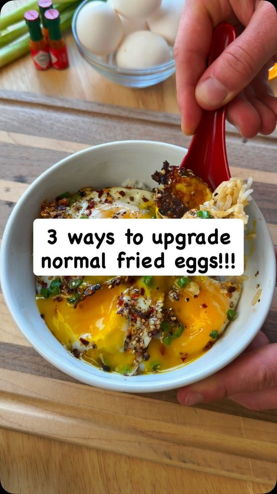
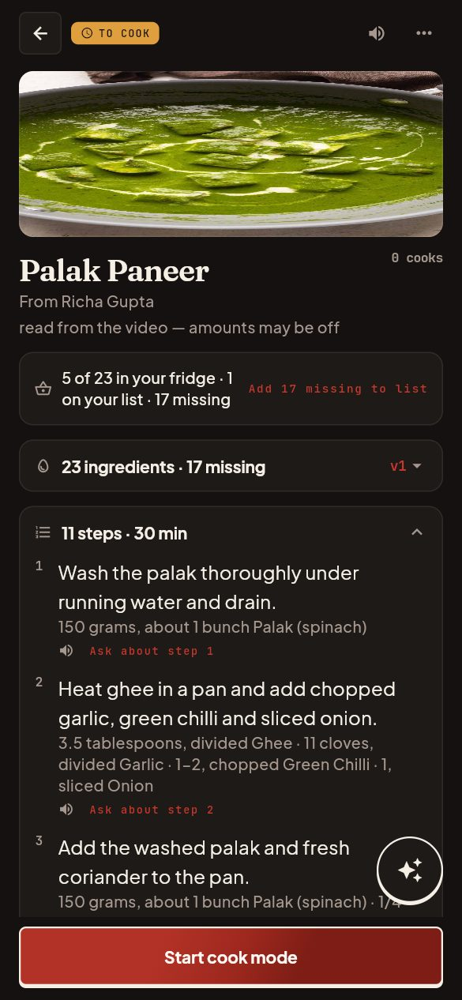
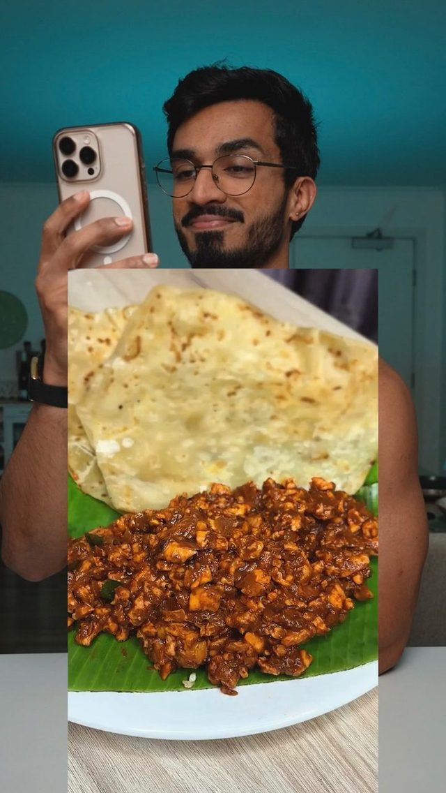
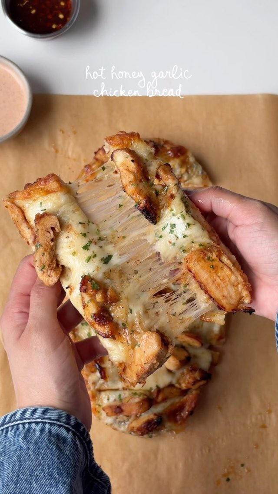
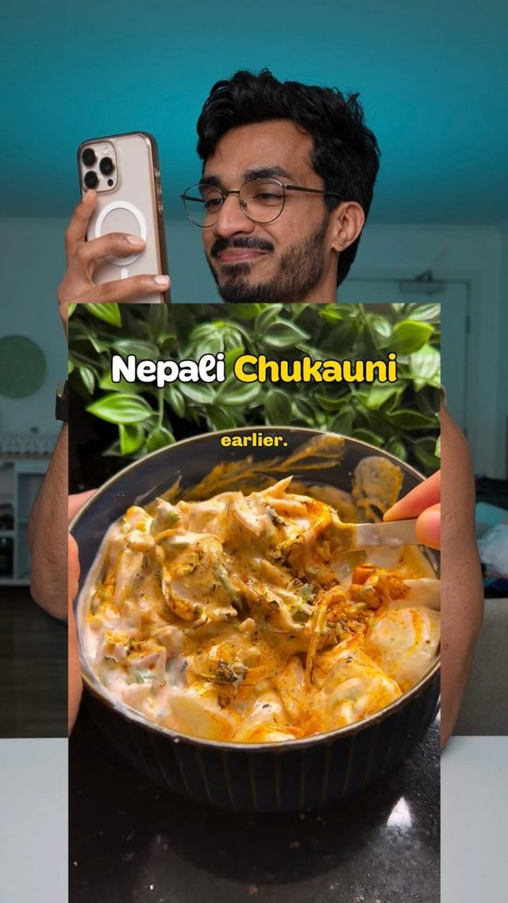
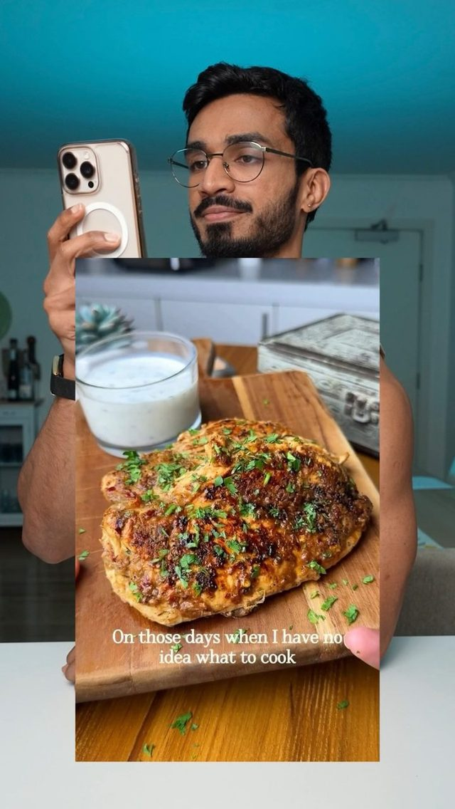
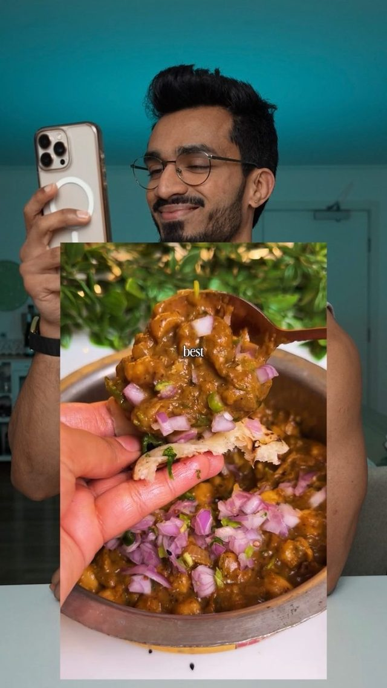
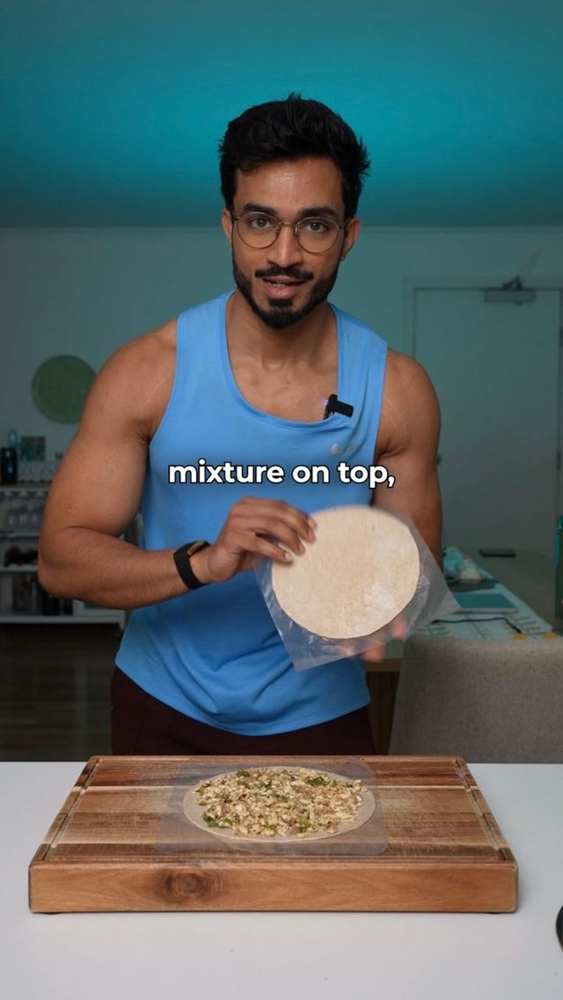
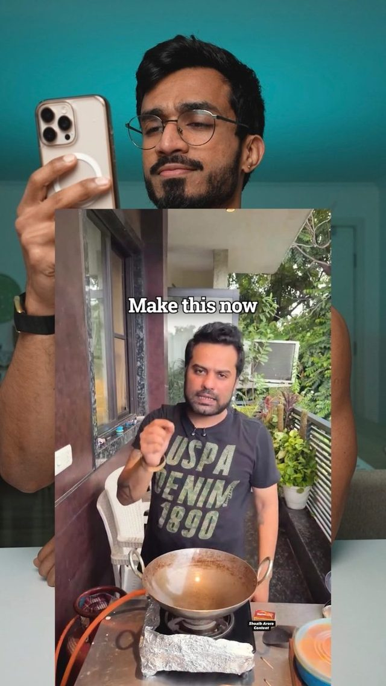

A page you can cook from
Steps in order, amounts beside the ingredient, one screen you can read with the pan already hot.
Shoku turns a cooking reel into a recipe page: steps in order, amounts beside the ingredient they belong to, and a count of what your fridge already covers. Every cook becomes a version you can keep.
Palak paneer, read from one reel: 23 ingredients, 11 steps, 30 minutes.


A reel is something you watch. A version is something you learned.
You save it. Weeks later the amounts are in the caption, the order is in the audio, and the version you improved last time was never written down anywhere.
Shoku does the reading. The steps arrive in order, the amounts sit next to their ingredient, and the page remembers what you changed.
Palak paneer · v1
Read from the video, so the amounts are estimates. The page says so, and every line can be edited.
Steps in order, amounts beside the ingredient, one screen you can read with the pan already hot.
Every recipe shows how much you already have, and the exact number of things to buy before you start.
Log what you changed and v2 keeps v1 beside it. Nothing you cooked is ever overwritten.
The assistant knows which step you are on, so a question is about the pan in front of you and not the whole internet.
Share a reel to Shoku, or take one from the Wall. The recipe is read once and kept with its steps.
The page counts what you already have. Palak paneer says 5 of 23, so 17 things to buy.
Your first cook log becomes v1. Every change after it is a version you can return to, with the old one intact.
Twenty one recipes are on the Wall today. Each one was read from a video, and each one keeps its thumbnail, its creator and its step count. Here are nine of them.
Richa Gupta · 11 steps

Ralston D'Souza · 19 steps

Iram Mansoor · 24 steps

Ralston D'Souza · 11 steps
Braydon Jackson Morgan · 8 steps

Ralston D'Souza · 7 steps

Ralston D'Souza · 16 steps

Ralston D'Souza · 8 steps

Ralston D'Souza · 11 steps
Thumbnails are the reels themselves, kept with each recipe so you can watch it again.
One reel, read once. The page arrived with eleven steps, twenty three ingredients, and a fridge check that told the truth: five already in the kitchen, seventeen to buy.
Then it says what it cannot know. Read from the video, amounts may be off. You change the cream, log the cook, and v1 stays exactly as it was.
Photograph the receipt. The photo goes to a vision model, comes back as lines you confirm, and is not kept. Nothing reaches your kitchen until you say yes to it.
Brand names are kept, because that is what is written on the packet. Amounts are kept only when the receipt states them.
Read from one photo
Real output from a test receipt. Supermarket noise, totals and tax lines are dropped.
From reels people import. The Wall is that feed and nothing on it is written by hand: a person imported the reel, the model read it, and the page was kept.
No. Importing needs a link to the reel, from Instagram or YouTube, and the reel has to be public. Browsing the Wall needs nothing at all.
They are read from a video, so they are estimates, and the page says so in one line instead of pretending. Every amount can be edited, and the edit is kept as a version.
A new version is written on your device and synced to your account. The old version stays, and you can pick it again from the version menu at any time.
It matches each recipe against the items you have and counts what is missing. It converts units only inside a family, grams to kilos and millilitres to litres. It never turns pieces into grams, and it never invents an amount it was not given.
Yes. One photo, read into lines you confirm or fix, then added to the fridge. The photo is sent once, read once, and not stored.
Yes. Your journal, fridge and versions sync to it, and the app keeps working offline once it has synced.
Not yet. The builds are Android APKs, and each release also publishes a debug build for testing.
In Supabase, with reel thumbnails on Google Cloud Storage. The app source is public, so you can read exactly what is sent before you install it.
Shoku is free, and every build is published in the open.
Take the arm64 build for most phones. The debug build sits beside it on the same release.